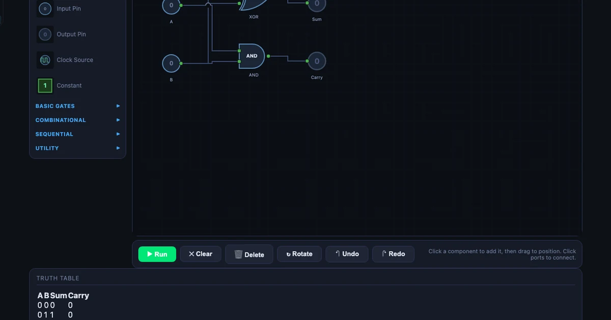
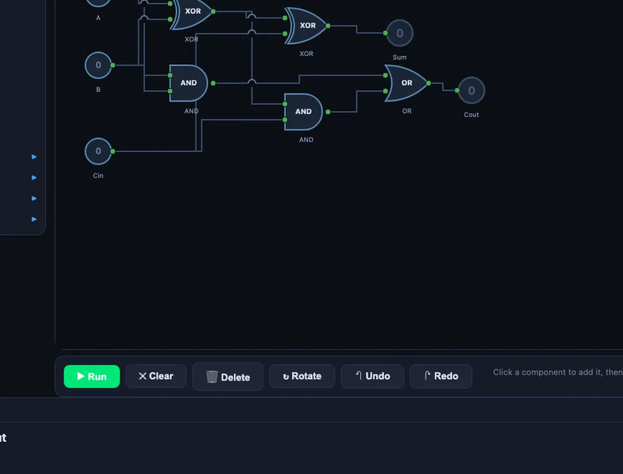

The Crossover I Didn't Expect: Teaching Boolean Logic to Mechanical Engineering Students

- The seven basic logic gates are AND (F = A · B), OR (F = A + B), NOT (F = Ā), NAND, NOR, XOR, and XNOR, where NAND and NOR are universal — any Boolean function can be built from either one alone.
- A half-adder uses one XOR for Sum (A ⊕ B) and one AND for Carry (A · B); a full-adder adds a carry-in for three inputs using two XOR, two AND, and one OR gate.
- Combinational logic depends only on current inputs, while sequential logic (D, SR, JK, T flip-flops) has memory and underpins PLC seal-in circuits and counters — the same Boolean logic mechanical engineers meet in PLCs and CNC controllers.
Every year, I get the same feedback from students who've just come back from their industrial placement. They know how to machine a part, read a drawing, and calculate bearing loads. But the moment a site supervisor puts a PLC program in front of them, they freeze. "The ladder diagram looked like a foreign language," one student told me last semester. He wasn't wrong — it kind of is, if you've never encountered Boolean logic before.
That single sentence is what pushed me to add a digital logic module to my second-year mechanical program. Not because I want to turn mechanical engineers into software developers. Because a machine that's running in 2026 almost certainly has a PLC controlling it, and my students need to understand what that controller is actually doing.
Why Mechanical Students Need to Know Boolean Logic
Here's the honest situation. CNC machining centres, robotic assembly lines, hydraulic press brakes, injection moulding machines — all of these run on PLCs. The PLC's program is, at its core, a set of Boolean conditions: if pressure sensor A AND limit switch B are both active, THEN start motor C. That's an AND gate. If either emergency stop OR overtemperature fault triggers, cut power. That's an OR gate with a NOT on the output.
My students don't need to write PLC programs from scratch on day one. But they do need to read them. They need to look at a rung of ladder logic and say, "okay, these two contacts in series mean both conditions must be true" — which is just AND. That mental translation becomes obvious once you've spent thirty minutes building gates in a simulator. It stays opaque forever if you haven't.
There's also the troubleshooting angle. When a machine stops unexpectedly, the first thing an engineer does is check the PLC output table — which inputs are on, which are off, which output should have fired and didn't. That is literally reading a truth table in real time. Students who understand combinational logic can do this. Students who don't are stuck waiting for the controls technician.
What the Logic Gate Simulator Actually Teaches
The Logic Gate Simulator has 22 components: the seven basic gates (AND, OR, NOT, NAND, NOR, XOR, XNOR), four sequential elements (D flip-flop, SR latch, JK flip-flop, T flip-flop), plus multiplexers, decoders, comparators, and display elements including a 7-segment display. It also ships with 10 built-in circuit presets — ranging from the half-adder right through to a traffic-light controller.
The three basic Boolean operations are expressed as:
\(F = A \cdot B\) (AND — both inputs must be HIGH)
\(F = A + B\) (OR — at least one input must be HIGH)
\(F = \overline{A}\) (NOT — output is the inverse of the input)
What makes the simulator genuinely useful in a classroom context is the truth table panel. Every time you wire up a circuit, it auto-generates the complete truth table — all \(2^n\) rows for n inputs. Drop in two input pins and a NAND gate: the table shows all four combinations instantly. Add a third input and the table expands to eight rows. Students see the pattern without having to hand-calculate each row.
The drag-and-drop interface is intentionally simple. There's no circuit board routing, no component library to navigate, no simulation engine to configure. You place a gate, you draw a wire, you toggle an input. The output updates immediately. That immediacy is exactly what a fifty-minute class needs — you don't want students spending the first twenty minutes just learning how to use the tool.
One thing I emphasise early: NAND and NOR are universal gates. Any Boolean function — no matter how complex — can be built from NAND gates alone, or NOR gates alone. That's not just a trivia point; it's why actual chip manufacturers standardise on one gate type. I ask students to rebuild a simple AND gate using only NANDs. Takes about three minutes in the simulator, and the moment it works, they understand gate universality in a way that a textbook diagram never quite delivers.
Start With the Half-Adder: A Circuit That Makes Sense Immediately
I always begin the logic module with the half-adder preset. It's the first circuit that feels like it's doing something useful — adding two binary numbers — rather than just demonstrating gate behaviour in isolation.
The half-adder takes two binary inputs, A and B, and produces two outputs:
\[\text{Sum} = A \oplus B \qquad \text{Carry} = A \cdot B\]Load the preset, then set A=1 and B=1. The XOR gate outputs 0 (inputs are equal, so no difference). The AND gate outputs 1 (both inputs are 1, so there's a carry). Sum = 0, Carry = 1. In binary, 1 + 1 = 10 — which is exactly what you've just computed. Students who've never thought about binary arithmetic get it in about thirty seconds.
The four-row truth table the simulator generates confirms every case: 0+0=0 (no carry), 0+1=1 (no carry), 1+0=1 (no carry), 1+1=0 with carry. The whole truth table has \(2^2 = 4\) rows because there are two inputs.
From there I ask students to build the full-adder. The full-adder adds a carry-in (\(C_{in}\)) from a previous stage, giving three inputs and two outputs:
\[\text{Sum} = A \oplus B \oplus C_{in} \qquad C_{out} = (A \cdot B) + (C_{in} \cdot (A \oplus B))\]Three inputs means the truth table now has \(2^3 = 8\) rows. The circuit uses two XOR gates, two AND gates, and one OR gate. Students who built the half-adder first can see immediately that the full-adder is two half-adders bolted together with an OR gate to combine the carries. The extension isn't scary — it's logical.

Sequential Logic: Flip-Flops and the 4-Bit Counter
Combinational logic is stateless — the output only depends on the current inputs. Sequential logic introduces memory. That distinction is where a lot of students get lost, and it's also where the connection to real industrial systems becomes most direct.
I introduce the D flip-flop first. It stores one bit: on each rising clock edge, the output Q copies whatever is at the D input. Simple. Then the SR latch — set it HIGH, it stays HIGH until you reset it. That's a seal-in circuit, which is one of the most common patterns in PLC ladder logic. Students who've seen a real e-stop panel suddenly recognise what the SR latch is doing.
The 4-bit counter preset is where things get visually satisfying. Four T flip-flops are chained together, each one toggling at half the frequency of the previous. Set the clock to anywhere between 0.5 and 10 Hz and watch the outputs count from 0000 to 1111 in binary — 0 to 15 in decimal — then roll over. Add the 7-segment display and students can watch the decimal digit counting up in real time.
That counter is also the most direct path to explaining how CNC step counters work. A stepper motor controller counts pulses. Each pulse increments a binary counter. When the count matches the programmed target, a comparator output fires and the axis stops. That's sequential logic — flip-flops, counters, comparators — all visible in the simulator with a clock running at 2 Hz and the truth table updating live.
How I Structure a Digital Logic Lesson
My standard session runs about 90 minutes split into five steps. I've tried shorter versions, but the five-step flow is the one that actually sticks.
Step 1 — Gates in isolation (15 min). Students drop each of the seven basic gates onto the canvas, add two input pins, toggle inputs, and read the output. No wiring between gates yet. The goal is purely to internalise what each gate does. I ask them to confirm that NAND is the inverse of AND before moving on.
Step 2 — Truth tables (10 min). I pick an expression — say, \(F = \overline{A \cdot B} + C\) — and ask students to predict the truth table on paper first. Then they build it in the simulator. The auto-generated table either confirms their work or shows them where they went wrong. This is the fastest feedback loop I've found for Boolean algebra.
Step 3 — Half-adder preset (20 min). Load the preset, walk through the XOR and AND outputs for all four input combinations, then modify it to build the full-adder from scratch. Students who finish early get the challenge of building a 2-bit adder by chaining two full-adders.
Step 4 — Alarm system preset (20 min). This is the one that makes the PLC connection explicit. The alarm preset has three sensors (smoke, temperature, motion) feeding into a combination of AND, OR, and NOT gates, with a latching SR flip-flop on the output. I ask students to translate each rung into plain English: "The alarm activates if smoke AND high temperature are both detected, OR if motion is detected after hours." Then I show them what that looks like in ladder logic. The translation is almost one-to-one.
Step 5 — PLC connection (25 min). Students sketch a simple conveyor control problem — start button, stop button, motor output, limit switch — and implement it first in the logic gate simulator, then write the equivalent ladder rung logic by hand. The PLC Ladder Logic simulator lets them verify the ladder version in the browser. By the end, they've built the same control logic in two different representations and confirmed that both produce the same truth table.
I also link this session to the Karnaugh Map simulator in the following class. Once students can build a circuit from a Boolean expression, the natural next question is: can I simplify the expression first? K-maps answer that. The two tools work together as a proper digital logic mini-module.
Try It Yourself
Open the simulator in your browser — no account, no download, no setup. Load the half-adder preset to start, then work through to the full-adder and the 4-bit counter. The truth table panel updates as you wire.
Open Logic Gate Simulator →Also useful: Karnaugh Map Simplifier · PLC Ladder Logic
Key Takeaways
- Mechanical engineers encounter Boolean logic daily on the shop floor — in PLCs, CNC controllers, and automated safety systems.
- The Logic Gate Simulator covers 22 components including all seven basic gates, four flip-flop types, and 10 built-in circuit presets.
- The half-adder (XOR + AND) is the best first circuit: A=1, B=1 gives Sum=0 (XOR) and Carry=1 (AND) — binary addition in two gates.
- NAND and NOR are universal gates; any Boolean function can be built from either one alone.
- Sequential elements (D flip-flop, SR latch, T flip-flop) connect directly to PLC seal-in circuits and step counters.
- The alarm-system and traffic-light presets translate almost directly to PLC ladder rungs — use them as bridge exercises.
- Pair this tool with the Karnaugh Map simulator to teach Boolean minimisation as a follow-up.
Frequently Asked Questions
Why do mechanical engineering students need to learn logic gates?
Modern mechanical systems rely on programmable logic controllers (PLCs), CNC machines, and automated production lines — all of which use Boolean logic for control sequences. A mechanical engineer who can read a ladder logic diagram or understand AND/OR control conditions is far more effective on an industrial shop floor than one who cannot. The Logic Gate Simulator builds that foundation without requiring any electronics background.
What are the 7 basic logic gates?
The seven basic logic gates are AND, OR, NOT, NAND, NOR, XOR, and XNOR. AND outputs 1 only when all inputs are 1. OR outputs 1 when at least one input is 1. NOT inverts the input. NAND and NOR are universal gates — any Boolean function can be built from NAND alone or NOR alone. XOR outputs 1 when inputs differ. XNOR outputs 1 when inputs match.
How does a half-adder differ from a full-adder?
A half-adder takes two binary inputs (A, B) and produces two outputs: Sum (A XOR B) and Carry (A AND B). It cannot handle a carry-in from a previous stage. A full-adder adds a third input (C_in), uses two XOR gates for the sum and two AND gates plus one OR gate for the carry-out, and can be chained to build multi-bit adders.
What is the difference between combinational and sequential logic?
Combinational logic has no memory — outputs depend only on current inputs (AND, OR, MUX, adders). Sequential logic has memory — outputs depend on both current inputs and past state, stored in flip-flops or latches. The D Flip-Flop, SR Latch, JK Flip-Flop, and T Flip-Flop in the simulator are all sequential elements; the 4-bit counter preset chains four T flip-flops together.
Can I use this simulator to prepare for PLC programming?
Yes. Boolean ladder logic in PLCs is directly equivalent to logic gate networks — a normally-open contact in series is an AND condition, contacts in parallel are OR, a normally-closed contact is NOT. Building circuits in the Logic Gate Simulator and converting them to ladder rung logic is an effective bridge exercise. The alarm-system and traffic-light presets are particularly close to real PLC programs.
Digital logic isn't on the mechanical engineering syllabus at most institutions, and I get why. There's already so much to cover — stress analysis, thermodynamics, manufacturing processes, machine design. Adding a whole new discipline feels like scope creep.
But I'm not asking mechanical students to become digital engineers. I'm asking them to spend one ninety-minute session understanding that a PLC program is built from the same AND, OR, and NOT operations they'll see every day on a modern shop floor. The student who froze in front of that ladder diagram came back the following year, placed at the same site. This time, he read the rung, traced the logic, and fixed the fault himself. That's the whole point.
If you're teaching a similar course, or you're an engineer preparing for a placement where PLCs are involved, give the simulator an hour. Start with the half-adder. Build the alarm system. Then open the PLC Ladder Logic simulator and translate what you built. The gap between "mechanical" and "electrical" is much narrower than it looks from this side.